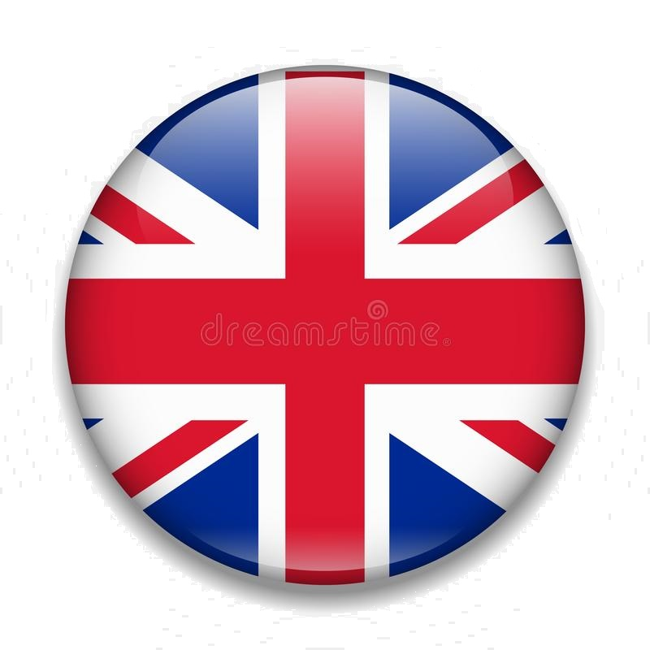
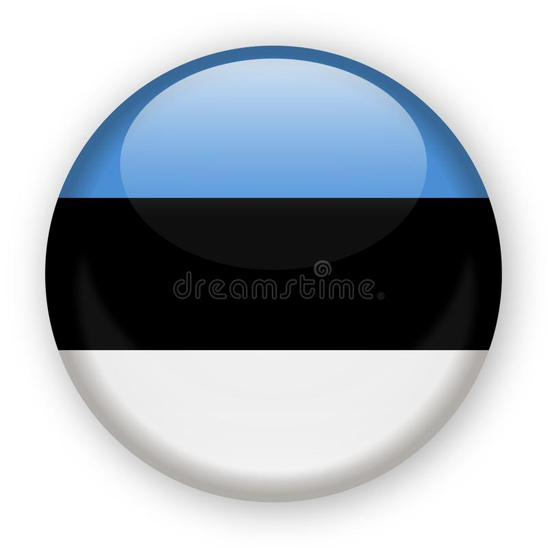

<ion-header [translucent]="true">
  <ion-toolbar>
    <ion-title> {{ 'home.title' | translate }} </ion-title>
    <ion-buttons slot="end">
      <ion-button *ngIf="showRemoveButton" (click)="onRemoveHabit()">
        <ion-icon name="trash-outline"></ion-icon>
      </ion-button>
      <ion-button (click)="onAddHabit()">
        <ion-icon name="add-circle"></ion-icon>
      </ion-button>
    </ion-buttons>
  </ion-toolbar>
</ion-header>

<ion-content [fullscreen]="true">
  <ion-grid class="ion-no-padding">
    <ion-row>
      <ion-col size="6"> </ion-col>
      <ion-col *ngFor="let dayBefore of [4,3,2,1,0]">
        <div>{{ date | previousDate:dayBefore | date: 'E' | translate }}</div>
        <div>{{ date | previousDate:dayBefore | date: 'dd' }}</div>
      </ion-col>
    </ion-row>
    <ion-row
      (touchstart)="pressEvent('start', id)"
      (touchend)="pressEvent('end', id)"
      *ngFor="let habit of habits; let id = index"
      class="rowForHabit"
    >
      <ion-col size="6">
        <ion-label [routerLink]="['/detail-view', id]">
          {{ habit.name }}
        </ion-label>
      </ion-col>
      <ng-container *ngIf="habit" (onCreate)="checkLastDatesDone(id)">
        <ion-col
          *ngFor="let isDone of habit.show; let daysAgo = index"
          (click)="onHabitCheck(daysAgo, id, isDone)"
        >
          <ion-icon *ngIf="!isDone" name="close-sharp"></ion-icon>
          <ion-icon *ngIf="isDone" name="checkmark-sharp"></ion-icon>
        </ion-col>
      </ng-container>
    </ion-row>
  </ion-grid>
</ion-content>

<ion-footer>
  <ion-toolbar>
    <!-- <label (click)="useLanguage('en')">  </label>
    <label (click)="useLanguage('ee')">  </label>
    <label (click)="useLanguage('ru')">  </label> -->
    
    
    
  </ion-toolbar>
</ion-footer>
